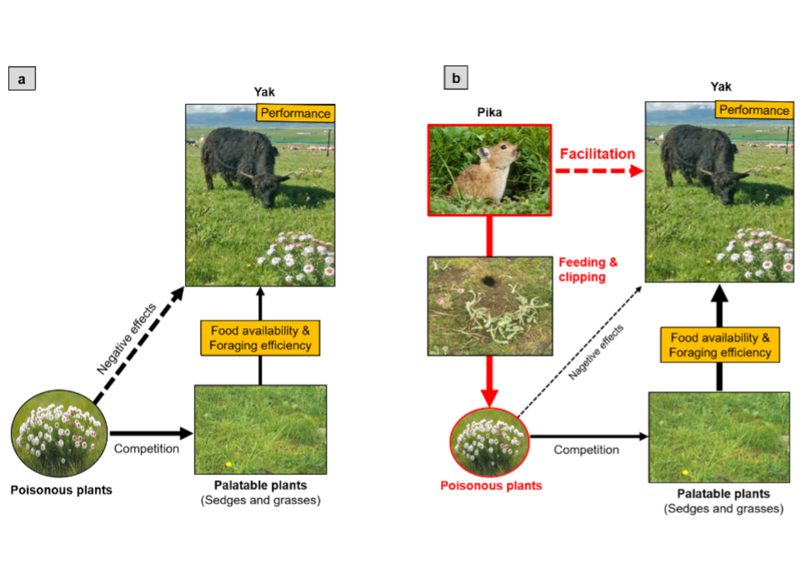
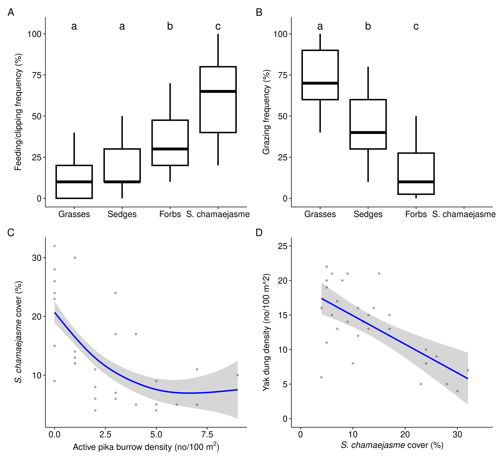
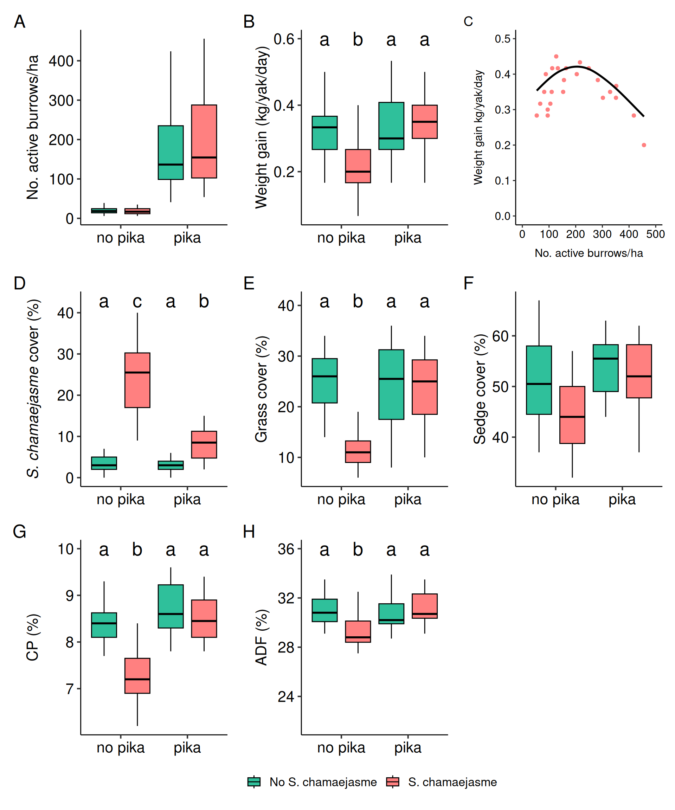
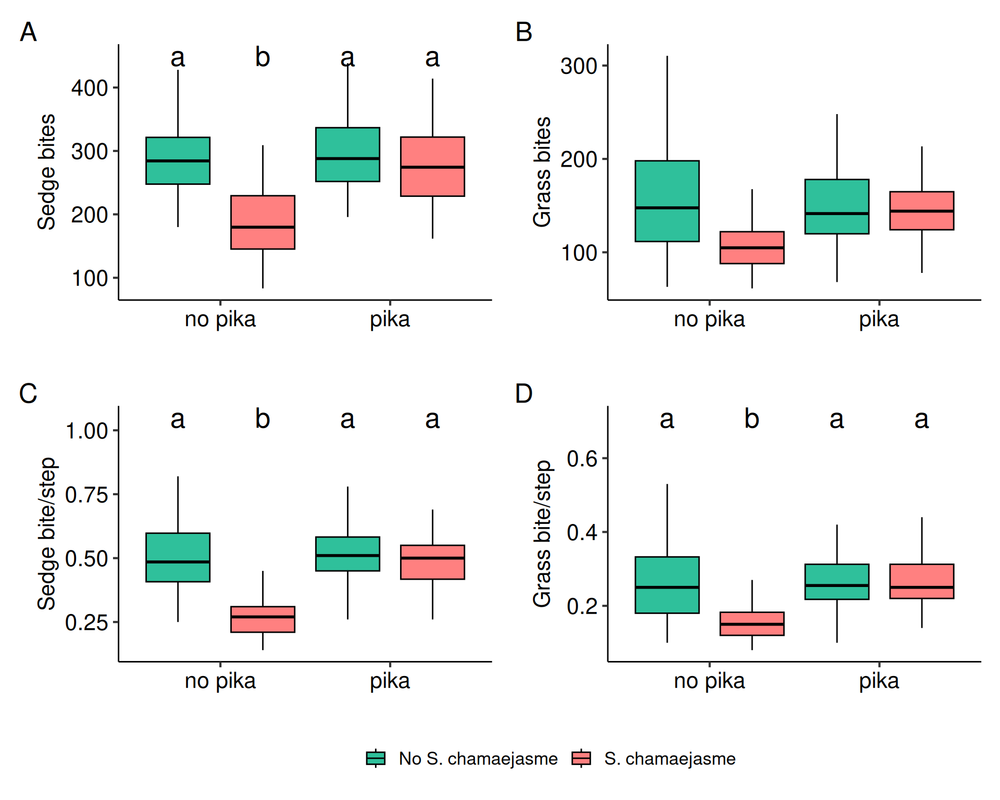
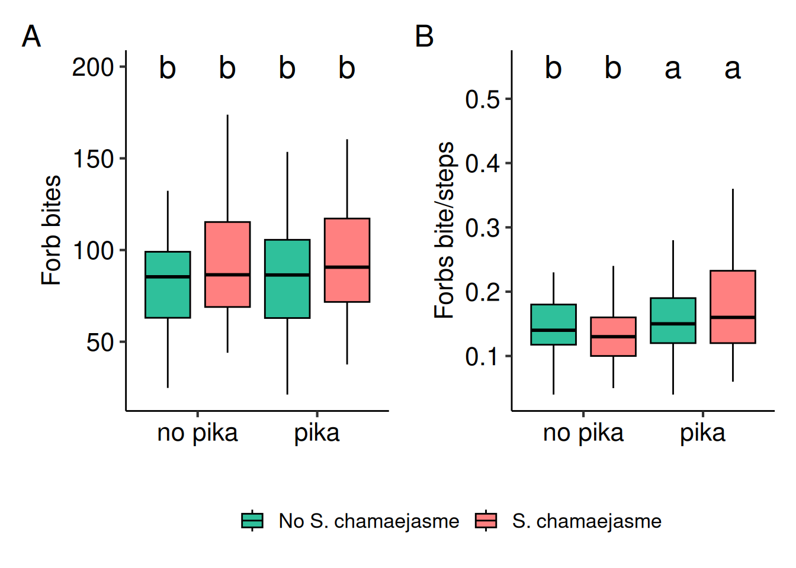

Methods and Results

1 Methods
1.1 Statistical analyses
All data were analyzed using linear models, generalized linear mixed models, or generalized additive models, with the choice of model and statistical family guided by the structure and distribution of the data. Posthoc comparisons were conducted only when the pika × S. chamaejasme interaction term was significant. For the 2021 field surveys, we fit generalized linear mixed models with plot and month as random effects. We then used generalized additive mixed models for S. chamaejasme cover and active pika burrow density, with plot as a random effect, and linear regression models for dung density and S. chamaejasme cover. For the field manipulation experiments in 2022 and 2023, we constructed generalized linear mixed models with the dependent variables (e.g., grass bites per step, sedge bites, weight gain) regressed against the interactive effect of pika and S. chamaejasme treatments, while including block, year, and month as random effects to capture the hierarchical structure of the data. Models assumed gaussian, beta (for proportions), or tweedie (for non-normal data) distributions, selected based on data type and model fit. A significance threshold of P = 0.05 was applied, with TukeyHSD or Sidak posthoc tests used where appropriate. All data management, modeling, and visualization were carried out in R, with dependencies managed using renv. The main modeling packages were glmmTMB and mgcv, with DHARMa used for model diagnostics. Data management relied on the tidyverse suite of packages. A complete record of package versions is available in the renv.lock file in the repository: https://github.com/ddlawton/pika_yak_interactions.
2 Results and Discussion
First, we carried out a set of field observational experiments to investigate diet selection by pika and yak, as well as the associations among pika abundance, S. chamaejasme abundance, and yak activity under natural field conditions. Consistent with previous studies5,11,24–25, we found that pika and yak have distinct diet preferences: yaks preferred grasses and sedges, while pika preferred the poisonous S. chamaejasme (Figure 2 A,B, Supplementary Table 1, Supplementary Table 2). We also found that S. chamaejasme abundance was negatively associated with active pika burrow abundance (Figure 2 C, Supplementary Table 4) and with yak foraging activity, as indicated by dung density (Figure 2 D, Supplementary Table 5).
Building on these results, we conducted an in-situ manipulative field experiment using fenced enclosures to test the interactive effects of pika and S. chamaejasme on yak weight gain, foraging quantity and quality, and grazing behavior. For weight gain, yaks gained less in poison-plant plots than in non-poison plots, and there was a significant interaction between pika and S. chamaejasme treatments (Supplementary Table 7). When pika were present, yaks showed higher weight gain (Supplementary Table 8). This effect was driven by pika feeding on S. chamaejasme (Figure 2 B, Supplementary Table 7, Supplementary Table 8), which increased grass cover (Figure 2 C, Supplementary Table 7, Supplementary Table 8) compared to plots with S. chamaejasme but no pika.
Food quantity and quality are key drivers of individual performance and population dynamics in large herbivores30–32. In the presence of S. chamaejasme forbs, pika doubled the cover of yak’s most preferred grasses (Figure 2 C, Supplementary Table 7, Supplementary Table 8) and increased the crude protein content by approximately 15% (Figure 3 D, Supplementary Table 7, Supplementary Table 8), suggesting that pika facilitate yak by enhancing both the quantity and quality of forage. Acid detergent fibre (6%) was higher in pika plots. These increases in grass abundance and forage quality were likely driven by the decline in poisonous plants induced by pika (Figure 3 B), which reduced interspecific competition for shared resources (e.g., light, soil moisture, nutrients) and allowed grasses to expand27–28. In the absence of S. chamaejasme forbs, however, the positive effects of pika on food resources and yak weight gain disappeared (Figure 3 A,C,D). The relationships between active burrow count and treatments, as well as between yak weight gain and burrow density, are presented in Figure 3 (panels G and H) and in Supplementary Table 3 and Supplementary Table 6, respectively.
Pika-yak facilitation was also linked to improved foraging efficiency in yak when grazing alongside pika. Optimal foraging theory predicts that animals minimize energy costs to exploit high-quality food items and maximize intake of digestible nutrients, thereby improving performance33. In ruminants, bite rate, step rate, and bites per step are key predictors of foraging efficiency34 and, ultimately, animal performance35. In the presence of S. chamaejasme forbs, yak sedge, and grass bite rates increased by roughly 48% (Figure 4 B), and 70% (Figure 4 C), respectively, in the treatment where they coexisted with pika (Supplementary Table 9, Supplementary Table 10). Yak stepped more often in the presence of S. chamaejasme forbs without pika, which meant they consumed more grasses and sedges per step in plots where pika were present.
Sedge bites per step and grass bites per step increased significantly by 89% (Figure 4 E) and 70% (Figure 3 F) in plots with pika. These gains in foraging efficiency can be attributed to the decline in S. chamaejasme forbs (Figure 3 B), which improved access to palatable grasses and sedges. In this system, increased food availability (Figure 3 C,D) and enhanced foraging efficiency (Figure 3) likely work together to shape the facilitative effects of pika on yak performance (Figure 3 A).



3 Supplementary Figures and Tables
Combined effects of two-year (2022–2023) pika and Stellera chamaejasme removal on forb cover in the field manipulative experiment. The average values of each variable in the two years were used for statistical analysis, providing a single data point for each variable in each 150 × 150 m plot (n = 16 plots: 4 plots per treatment combination). Error bars represent +/- SE.

| effect | term | estimate | std.error | statistic | p.value |
|---|---|---|---|---|---|
| Pika feeding | |||||
| fixed | (Intercept) | 36.33 | 3.24 | 11.23 | 0.00 |
| fixed | Grasses | −21.67 | 4.39 | −4.94 | 0.00 |
| fixed | S. chamaejasme | 23.67 | 4.39 | 5.39 | 0.00 |
| fixed | Sedges | −18.67 | 4.39 | −4.25 | 0.00 |
| random | plot | 0.00 | NA | NA | NA |
| random | month | 1.58 | NA | NA | NA |
| random | Residual | 17.00 | NA | NA | NA |
| Yak feeding | |||||
| fixed | (Intercept) | 16.33 | 3.23 | 5.05 | 0.00 |
| fixed | Grasses | 58.00 | 4.24 | 13.68 | 0.00 |
| fixed | Sedges | 29.00 | 4.24 | 6.84 | 0.00 |
| random | transect | 3.83 | NA | NA | NA |
| random | month | 0.00 | NA | NA | NA |
| random | Residual | 16.42 | NA | NA | NA |
| contrast | estimate | SE | df | t.ratio | p.value |
|---|---|---|---|---|---|
| Pika feeding | |||||
| Forbs - Grasses | 21.67 | 4.39 | 113.00 | 4.94 | 0.00 |
| Forbs - S. chamaejasme | −23.67 | 4.39 | 113.00 | −5.39 | 0.00 |
| Forbs - Sedges | 18.67 | 4.39 | 113.00 | 4.25 | 0.00 |
| Grasses - S. chamaejasme | −45.33 | 4.39 | 113.00 | −10.33 | 0.00 |
| Grasses - Sedges | −3.00 | 4.39 | 113.00 | −0.68 | 0.90 |
| S. chamaejasme - Sedges | 42.33 | 4.39 | 113.00 | 9.64 | 0.00 |
| Yak feeding | |||||
| Forbs - Grasses | −58.00 | 4.24 | 84.00 | −13.68 | 0.00 |
| Forbs - Sedges | −29.00 | 4.24 | 84.00 | −6.84 | 0.00 |
| Grasses - Sedges | 29.00 | 4.24 | 84.00 | 6.84 | 0.00 |
| effect | term | estimate | std.error | statistic | p.value |
|---|---|---|---|---|---|
| fixed | (Intercept) | 20.21 | 17.10 | 1.18 | 0.24 |
| fixed | pika_treatmentpika | 149.67 | 22.01 | 6.80 | 0.00 |
| fixed | posion_plant_treatmentS. chamaejasme | −2.42 | 22.01 | −0.11 | 0.91 |
| fixed | pika_treatmentpika:posion_plant_treatmentS. chamaejasme | 28.42 | 31.13 | 0.91 | 0.36 |
| random | block | 14.20 | NA | NA | NA |
| random | month | 0.00 | NA | NA | NA |
| random | Residual | 76.24 | NA | NA | NA |
| term | estimate | std.error | statistic | p.value | edf | ref.df |
|---|---|---|---|---|---|---|
| Intercept | 13.33 | 1.21 | 10.99 | 0.00 | NA | NA |
| s(active pika burrow density) | NA | NA | 13.17 | 0.00 | 2.10 | 7.00 |
| s(plot) [random effect] | NA | NA | 1.17 | 0.06 | 15.12 | 29.00 |
| term | estimate | std.error | statistic | p.value |
|---|---|---|---|---|
| Intercept | 19.07 | 1.41 | 13.50 | 0.00 |
| S. chamaejasme cover (%) | −0.42 | 0.09 | −4.62 | 0.00 |
| term | edf | ref.df | statistic | p.value |
|---|---|---|---|---|
| s(active_burrows) | 2.27 | 14.00 | 4.74 | 0.00 |
| s(block) | 1.72 | 3.00 | 1.44 | 0.09 |
| s(year) | 0.23 | 1.00 | 0.31 | 0.25 |
| s(month) | 1.57 | 2.00 | 5.24 | 0.01 |
| effect | term | estimate | std.error | statistic | p.value |
|---|---|---|---|---|---|
| weight gain | |||||
| fixed | (Intercept) | 0.32 | 0.03 | 10.80 | 0.00 |
| fixed | pika | 0.01 | 0.01 | 0.74 | 0.46 |
| fixed | S. chamaejasme | −0.11 | 0.01 | −7.70 | 0.00 |
| fixed | pika:S. chamaejasme | 0.13 | 0.02 | 6.63 | 0.00 |
| random | block | 0.01 | NA | NA | NA |
| random | year | 0.01 | NA | NA | NA |
| random | month | 0.05 | NA | NA | NA |
| random | Residual | 0.07 | NA | NA | NA |
| grass cover | |||||
| fixed | (Intercept) | −1.08 | 0.09 | −11.59 | 0.00 |
| fixed | pika | −0.09 | 0.10 | −0.88 | 0.38 |
| fixed | S. chamaejasme | −0.86 | 0.11 | −7.75 | 0.00 |
| fixed | pika:S. chamaejasme | 0.88 | 0.15 | 5.94 | 0.00 |
| random | block | 0.13 | NA | NA | NA |
| random | year | 0.00 | NA | NA | NA |
| random | month | 0.00 | NA | NA | NA |
| sedge cover | |||||
| fixed | (Intercept) | 0.05 | 0.08 | 0.59 | 0.55 |
| fixed | pika | 0.12 | 0.08 | 1.50 | 0.13 |
| fixed | S. chamaejasme | −0.27 | 0.08 | −3.51 | 0.00 |
| fixed | pika:S. chamaejasme | 0.19 | 0.11 | 1.77 | 0.08 |
| random | block | 0.08 | NA | NA | NA |
| random | year | 0.00 | NA | NA | NA |
| random | month | 0.06 | NA | NA | NA |
| forb cover | |||||
| fixed | (Intercept) | −1.10 | 0.10 | −10.44 | 0.00 |
| fixed | pika | 0.05 | 0.09 | 0.50 | 0.62 |
| fixed | S. chamaejasme | −0.22 | 0.10 | −2.22 | 0.03 |
| fixed | pika:S. chamaejasme | 0.09 | 0.14 | 0.65 | 0.51 |
| random | block | 0.10 | NA | NA | NA |
| random | year | 0.09 | NA | NA | NA |
| random | month | 0.00 | NA | NA | NA |
| S. chamaejasme | |||||
| fixed | (Intercept) | −3.19 | 0.21 | −15.11 | 0.00 |
| fixed | pika | −0.10 | 0.17 | −0.57 | 0.57 |
| fixed | S. chamaejasme | 2.03 | 0.14 | 14.57 | 0.00 |
| fixed | pika:S. chamaejasme | −1.14 | 0.21 | −5.54 | 0.00 |
| random | block | 0.14 | NA | NA | NA |
| random | year | 0.13 | NA | NA | NA |
| random | month | 0.22 | NA | NA | NA |
| crude protein % | |||||
| fixed | (Intercept) | −2.32 | 0.02 | −105.66 | 0.00 |
| fixed | pika | 0.03 | 0.02 | 1.78 | 0.08 |
| fixed | S. chamaejasme | −0.15 | 0.02 | −8.34 | 0.00 |
| fixed | pika:S. chamaejasme | 0.13 | 0.02 | 5.21 | 0.00 |
| random | block | 0.01 | NA | NA | NA |
| random | year | 0.00 | NA | NA | NA |
| random | month | 0.02 | NA | NA | NA |
| acid detergent fibre % | |||||
| fixed | (Intercept) | −0.81 | 0.02 | −32.45 | 0.00 |
| fixed | pika | 0.01 | 0.02 | 0.46 | 0.65 |
| fixed | S. chamaejasme | −0.06 | 0.02 | −3.14 | 0.00 |
| fixed | pika:S. chamaejasme | 0.08 | 0.03 | 2.84 | 0.00 |
| random | block | 0.03 | NA | NA | NA |
| random | year | 0.00 | NA | NA | NA |
| random | month | 0.03 | NA | NA | NA |
| neutral detergent fiber % | |||||
| fixed | (Intercept) | 0.50 | 0.02 | 28.62 | 0.00 |
| fixed | pika | 0.03 | 0.02 | 1.01 | 0.31 |
| fixed | S. chamaejasme | −0.05 | 0.02 | −2.01 | 0.04 |
| fixed | pika:S. chamaejasme | 0.02 | 0.04 | 0.61 | 0.54 |
| random | block | 0.00 | NA | NA | NA |
| random | year | 0.00 | NA | NA | NA |
| random | month | 0.00 | NA | NA | NA |
| contrast | estimate | SE | df | t.ratio | p.value |
|---|---|---|---|---|---|
| weight gain | |||||
| no pika No S. chamaejasme - pika No S. chamaejasme | −0.01 | 0.01 | 184.00 | −0.74 | 0.88 |
| no pika No S. chamaejasme - no pika S. chamaejasme | 0.11 | 0.01 | 184.00 | 7.70 | 0.00 |
| no pika No S. chamaejasme - pika S. chamaejasme | −0.03 | 0.01 | 184.00 | −2.42 | 0.08 |
| pika No S. chamaejasme - no pika S. chamaejasme | 0.12 | 0.01 | 184.00 | 8.44 | 0.00 |
| pika No S. chamaejasme - pika S. chamaejasme | −0.02 | 0.01 | 184.00 | −1.68 | 0.34 |
| no pika S. chamaejasme - pika S. chamaejasme | −0.14 | 0.01 | 184.00 | −10.12 | 0.00 |
| grass cover | |||||
| no pika No S. chamaejasme / pika No S. chamaejasme | NA | 0.11 | Inf | NA | 0.81 |
| no pika No S. chamaejasme / no pika S. chamaejasme | NA | 0.26 | Inf | NA | 0.00 |
| no pika No S. chamaejasme / pika S. chamaejasme | NA | 0.10 | Inf | NA | 0.90 |
| pika No S. chamaejasme / no pika S. chamaejasme | NA | 0.24 | Inf | NA | 0.00 |
| pika No S. chamaejasme / pika S. chamaejasme | NA | 0.10 | Inf | NA | 1.00 |
| no pika S. chamaejasme / pika S. chamaejasme | NA | 0.05 | Inf | NA | 0.00 |
| S. chamaejasme | |||||
| no pika No S. chamaejasme / pika No S. chamaejasme | NA | 0.19 | Inf | NA | 0.94 |
| no pika No S. chamaejasme / no pika S. chamaejasme | NA | 0.02 | Inf | NA | 0.00 |
| no pika No S. chamaejasme / pika S. chamaejasme | NA | 0.07 | Inf | NA | 0.00 |
| pika No S. chamaejasme / no pika S. chamaejasme | NA | 0.02 | Inf | NA | 0.00 |
| pika No S. chamaejasme / pika S. chamaejasme | NA | 0.06 | Inf | NA | 0.00 |
| no pika S. chamaejasme / pika S. chamaejasme | NA | 0.38 | Inf | NA | 0.00 |
| crude protein % | |||||
| no pika No S. chamaejasme / pika No S. chamaejasme | NA | 0.02 | Inf | NA | 0.28 |
| no pika No S. chamaejasme / no pika S. chamaejasme | NA | 0.02 | Inf | NA | 0.00 |
| no pika No S. chamaejasme / pika S. chamaejasme | NA | 0.02 | Inf | NA | 0.93 |
| pika No S. chamaejasme / no pika S. chamaejasme | NA | 0.02 | Inf | NA | 0.00 |
| pika No S. chamaejasme / pika S. chamaejasme | NA | 0.02 | Inf | NA | 0.65 |
| no pika S. chamaejasme / pika S. chamaejasme | NA | 0.01 | Inf | NA | 0.00 |
| acid detergent fibre % | |||||
| no pika No S. chamaejasme / pika No S. chamaejasme | NA | 0.02 | Inf | NA | 0.97 |
| no pika No S. chamaejasme / no pika S. chamaejasme | NA | 0.02 | Inf | NA | 0.01 |
| no pika No S. chamaejasme / pika S. chamaejasme | NA | 0.02 | Inf | NA | 0.55 |
| pika No S. chamaejasme / no pika S. chamaejasme | NA | 0.02 | Inf | NA | 0.00 |
| pika No S. chamaejasme / pika S. chamaejasme | NA | 0.02 | Inf | NA | 0.82 |
| no pika S. chamaejasme / pika S. chamaejasme | NA | 0.02 | Inf | NA | 0.00 |
| effect | term | estimate | std.error | statistic | p.value |
|---|---|---|---|---|---|
| sedge bites/h | |||||
| fixed | (Intercept) | 5.65 | 0.04 | 138.78 | 0.00 |
| fixed | pika | 0.04 | 0.04 | 0.92 | 0.36 |
| fixed | S. chamaejasme | −0.42 | 0.05 | −8.71 | 0.00 |
| fixed | pika:S. chamaejasme | 0.35 | 0.06 | 5.51 | 0.00 |
| random | block | 0.04 | NA | NA | NA |
| random | year | 0.02 | NA | NA | NA |
| random | month | 0.03 | NA | NA | NA |
| grass bites/h | |||||
| fixed | (Intercept) | 151.72 | 7.49 | 20.25 | 0.00 |
| fixed | pika | −0.80 | 8.61 | −0.09 | 0.93 |
| fixed | S. chamaejasme | −45.34 | 8.61 | −5.27 | 0.00 |
| fixed | pika:S. chamaejasme | 43.95 | 12.17 | 3.61 | 0.00 |
| random | block | 4.78 | NA | NA | NA |
| random | year | 5.17 | NA | NA | NA |
| random | month | 0.00 | NA | NA | NA |
| random | Residual | 42.16 | NA | NA | NA |
| forb bites/h | |||||
| fixed | (Intercept) | 4.39 | 0.07 | 65.12 | 0.00 |
| fixed | pika | 0.07 | 0.07 | 1.06 | 0.29 |
| fixed | S. chamaejasme | 0.13 | 0.07 | 1.90 | 0.06 |
| fixed | pika:S. chamaejasme | −0.04 | 0.10 | −0.44 | 0.66 |
| random | block | 0.06 | NA | NA | NA |
| random | year | 0.00 | NA | NA | NA |
| random | month | 0.05 | NA | NA | NA |
| sedges bite steps | |||||
| fixed | (Intercept) | 0.04 | 0.12 | 0.31 | 0.75 |
| fixed | pika | 0.08 | 0.12 | 0.67 | 0.50 |
| fixed | S. chamaejasme | −0.94 | 0.13 | −7.54 | 0.00 |
| fixed | pika:S. chamaejasme | 1.00 | 0.17 | 5.78 | 0.00 |
| random | block | 0.17 | NA | NA | NA |
| random | month | 0.06 | NA | NA | NA |
| grass bite steps | |||||
| fixed | (Intercept) | −1.01 | 0.06 | −16.03 | 0.00 |
| fixed | pika | 0.02 | 0.09 | 0.20 | 0.84 |
| fixed | S. chamaejasme | −0.60 | 0.10 | −6.16 | 0.00 |
| fixed | pika:S. chamaejasme | 0.66 | 0.13 | 5.05 | 0.00 |
| random | block | 0.01 | NA | NA | NA |
| random | month | 0.00 | NA | NA | NA |
| forb bite steps | |||||
| fixed | (Intercept) | −1.76 | 0.09 | −18.74 | 0.00 |
| fixed | pika | 0.06 | 0.09 | 0.64 | 0.52 |
| fixed | S. chamaejasme | −0.05 | 0.09 | −0.49 | 0.63 |
| fixed | pika:S. chamaejasme | 0.24 | 0.13 | 1.83 | 0.07 |
| random | block | 0.11 | NA | NA | NA |
| random | month | 0.07 | NA | NA | NA |
| contrast | estimate | SE | df | t.ratio | p.value |
|---|---|---|---|---|---|
| sedge bites/h | |||||
| no pika No S. chamaejasme / pika No S. chamaejasme | NA | 0.04 | Inf | NA | 0.80 |
| no pika No S. chamaejasme / no pika S. chamaejasme | NA | 0.07 | Inf | NA | 0.00 |
| no pika No S. chamaejasme / pika S. chamaejasme | NA | 0.04 | Inf | NA | 0.94 |
| pika No S. chamaejasme / no pika S. chamaejasme | NA | 0.08 | Inf | NA | 0.00 |
| pika No S. chamaejasme / pika S. chamaejasme | NA | 0.05 | Inf | NA | 0.45 |
| no pika S. chamaejasme / pika S. chamaejasme | NA | 0.03 | Inf | NA | 0.00 |
| grass bites/h | |||||
| no pika No S. chamaejasme - pika No S. chamaejasme | 0.80 | 8.61 | 184.00 | 0.09 | 1.00 |
| no pika No S. chamaejasme - no pika S. chamaejasme | 45.34 | 8.61 | 184.00 | 5.27 | 0.00 |
| no pika No S. chamaejasme - pika S. chamaejasme | 2.19 | 8.61 | 184.00 | 0.25 | 0.99 |
| pika No S. chamaejasme - no pika S. chamaejasme | 44.54 | 8.61 | 184.00 | 5.18 | 0.00 |
| pika No S. chamaejasme - pika S. chamaejasme | 1.39 | 8.61 | 184.00 | 0.16 | 1.00 |
| no pika S. chamaejasme - pika S. chamaejasme | −43.15 | 8.61 | 184.00 | −5.01 | 0.00 |
| sedges bite steps | |||||
| no pika No S. chamaejasme / pika No S. chamaejasme | NA | 0.11 | Inf | NA | 0.91 |
| no pika No S. chamaejasme / no pika S. chamaejasme | NA | 0.32 | Inf | NA | 0.00 |
| no pika No S. chamaejasme / pika S. chamaejasme | NA | 0.10 | Inf | NA | 0.65 |
| pika No S. chamaejasme / no pika S. chamaejasme | NA | 0.35 | Inf | NA | 0.00 |
| pika No S. chamaejasme / pika S. chamaejasme | NA | 0.11 | Inf | NA | 0.96 |
| no pika S. chamaejasme / pika S. chamaejasme | NA | 0.04 | Inf | NA | 0.00 |
| grass bite steps | |||||
| no pika No S. chamaejasme / pika No S. chamaejasme | NA | 0.09 | Inf | NA | 1.00 |
| no pika No S. chamaejasme / no pika S. chamaejasme | NA | 0.18 | Inf | NA | 0.00 |
| no pika No S. chamaejasme / pika S. chamaejasme | NA | 0.08 | Inf | NA | 0.78 |
| pika No S. chamaejasme / no pika S. chamaejasme | NA | 0.18 | Inf | NA | 0.00 |
| pika No S. chamaejasme / pika S. chamaejasme | NA | 0.08 | Inf | NA | 0.88 |
| no pika S. chamaejasme / pika S. chamaejasme | NA | 0.05 | Inf | NA | 0.00 |
| Statistical Models Summary | |||||
| Overview of all models used in the study | |||||
| Response Variable | Model Type | Distribution/Family | Interaction Terms | Random Effects | Sample Size |
|---|---|---|---|---|---|
| Diet selection | |||||
| Pika feeding frequency | GLMM | Gaussian | plot, month | n = 10 plots | |
| Yak grazing frequency | GLMM | Gaussian | transect, month | n = 10 transects | |
| S. chamaejasme cover | GAM | Gaussian | plot | n = 30 plots | |
| Yak dung density | LM | Gaussian | n = 30 plots | ||
| Yak performance | |||||
| Yak weight gain | GLMM | Gaussian | pika × S. chamaejasme | block, year, month | n = 16 plots, 2 years |
| Yak weight gain (vs burrow density) | GAM | Gaussian | block, year, month | n = 16 plots | |
| Plant cover | |||||
| Grasses | GLMM | Beta | pika × S. chamaejasme | block, year, month | n = 16 plots, 2 years |
| Sedges | GLMM | Beta | pika × S. chamaejasme | block, year, month | n = 16 plots, 2 years |
| Forbs | GLMM | Beta | pika × S. chamaejasme | block, year, month | n = 16 plots, 2 years |
| S_chamaejasme | GLMM | Beta | pika × S. chamaejasme | block, year, month | n = 16 plots, 2 years |
| Active burrow density | GLMM | Gaussian | pika × S. chamaejasme | block, month | n = 16 plots, 2 years |
| Forage quality | |||||
| Crude protein (%) | GLMM | Beta | pika × S. chamaejasme | block, year, month | n = 16 plots, 2 years |
| Acid detergent fiber (%) | GLMM | Beta | pika × S. chamaejasme | block, year, month | n = 16 plots, 2 years |
| Neutral detergent fiber (%) | GLMM | Beta | pika × S. chamaejasme | block, year, month | n = 16 plots, 2 years |
| Foraging efficiency | |||||
| Sedge bite rate | GLMM | Tweedie (p = 0.04) | pika × S. chamaejasme | block, year, month | n = 16 plots, 2 years |
| Grass bite rate | GLMM | Gaussian | pika × S. chamaejasme | block, year, month | n = 16 plots, 2 years |
| Forb bite rate | GLMM | Tweedie (p = 0.07) | pika × S. chamaejasme | block, year, month | n = 16 plots, 2 years |
| Sedge bites/step | GLMM | Beta | pika × S. chamaejasme | block, month | n = 16 plots |
| Grass bites/step | GLMM | Beta | pika × S. chamaejasme | block, month | n = 16 plots |
| Forb bites/step | GLMM | Beta | pika × S. chamaejasme | block, month | n = 16 plots |
| GLMM = Generalized Linear Mixed Model; GAM = Generalized Additive Mixed Model; LM = Linear Model. For Tweedie distributions, p indicates the power parameter. | |||||